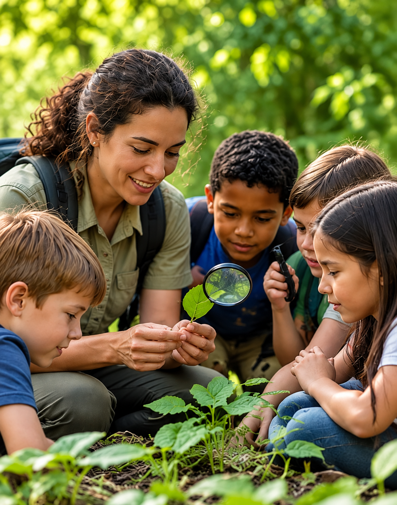
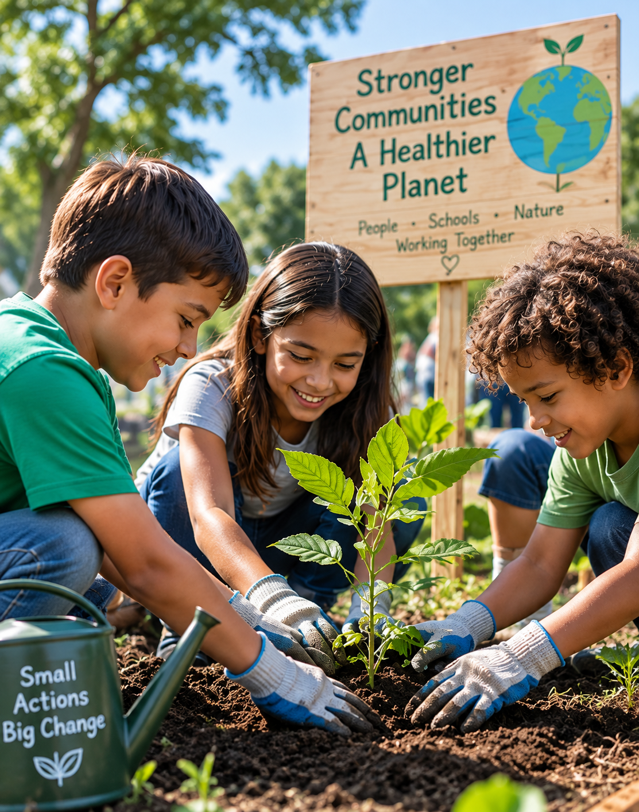
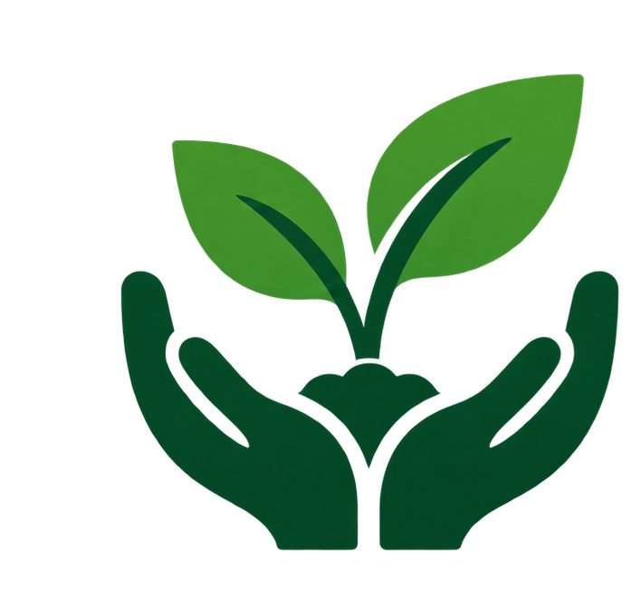
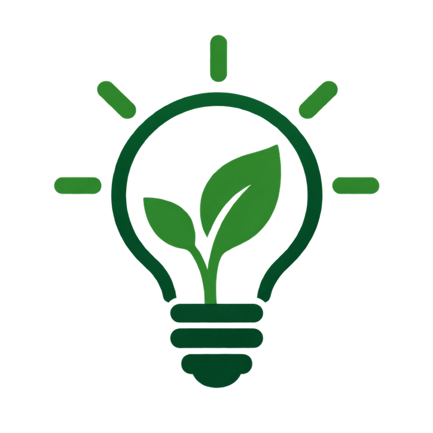
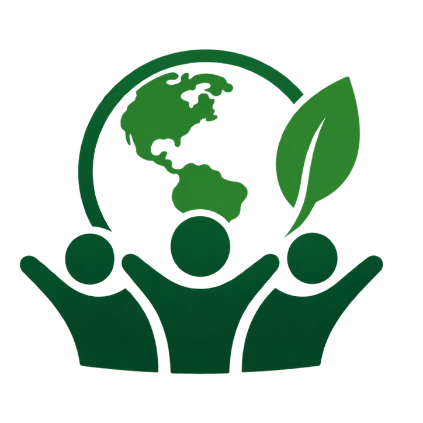
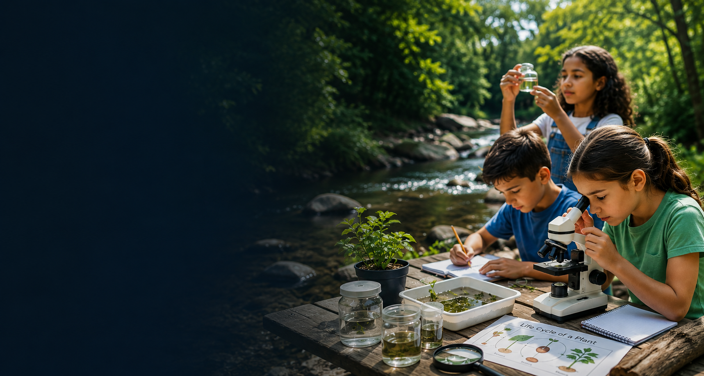

Environmental Workshops
Interactive, hands-on workshops that help students explore ecosystems, sustainability, biodiversity, and environmental challenges.
Learn More
Hands-on science and STEAM learning experiences that empower students to explore the natural world, develop critical-thinking skills, and turn knowledge into meaningful action.
Hands-on environmental education and STEAM experiences designed to bring science to life for students, schools, and communities.

Interactive, hands-on workshops that help students explore ecosystems, sustainability, biodiversity, and environmental challenges.
Learn More
Engaging science and environmental activity kits designed for classrooms, educators, and hands-on learning experiences.
Learn More
Educational experiences, presentations, and collaborative projects created for schools, organizations, and communities.
Learn MoreWe believe every child can make a difference. Through hands-on learning, science, and creativity, we inspire students to explore nature and build a more sustainable future.

Learning through real-world experiences.

Encouraging curiosity and creativity.

Building a more sustainable future together.
EcoScience Learning brings environmental education and STEAM concepts together through accessible, engaging experiences for young learners and their communities.
This site is a demonstration of the proposed EcoScience Learning initiative.

Inspire students through hands-on environmental science, STEAM learning, and meaningful real-world experiences.
This is a demonstration project. Public contact details are being finalized.
View Contact Options